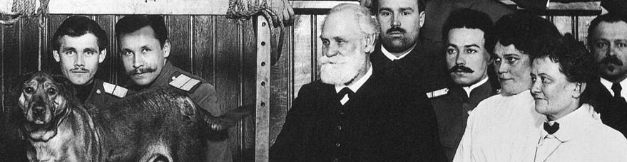

AsKemata |
|

Ivan Pavlov1, [ Publicado no blog Catatau em 8/11/2010. https://catatau.wordpress.com/2010/11/08/o-mal-menor/ ] o conhecido fisiologista russo e ganhador do prêmio Nobel de Medicina em 1904, tinha uma relação controvertida com a terra-mãe.
Durante o czarismo suas pesquisas não eram definitivamente financiadas. Mas após a Revolução Russa e especialmente a partir dos anos 20, ele recebeu muito financiamento.
Ele chamava ironicamente o regime da URSS de "experimento social", enquanto aplicava experimentos de toda sorte em seus cães. Muitas vezes ele comentou sobre as reações do cão na aplicação de ácido sobre a língua, minuciosamente descrevendo seus efeitos corrosivos e analisando funcionalmente o acontecimento. Naqueles tempos, fazer do homem um objeto à mercê de interesses sociais ou políticos talvez ainda fosse assunto para o riso ou o desagrado dos cientistas (ou pelo menos de alguns de seus melhores), enquanto não se tinha restrições relativas aos direitos dos animais.
O governo dirigia grandes financiamentos a Pavlov; em contrapartida, diversos dos pronunciamentos do cientista eram diametralmente contestadores.
Conta uma anedota que durante a Revolução Russa ele reprovou o atraso de um aluno, justificado pelo banho de sangue que o obrigou a fazer um caminho maior até o laboratório. Pavlov, que chegara no horário (como fazia todos os dias), repreendeu o aluno e pediu para que ele não se atrasasse na próxima Revolução!
Ou então, quando no fim dos anos 20 as instituições começaram a contratar apenas professores socialistas, Pavlov, já notório há longo tempo, criticou publicamente Stalin, declarando ter vergonha de ser russo.
Com o passar do tempo, a atitude de nosso herói para com o Regime mudou. Ela não se tornou absolutamente elogiosa, mas estranhamente condescendente. Movimentos como o nazismo despontavam no horizonte, e com eles a sombra de mais uma guerra. Enfraquecida, a URSS poderia passar de seu estatismo stalinista para um regime fascista em moldes hitlerianos… e isso sem contar o peso de uma guerra.
Dos males, dizem alguns comentadores, Pavlov escolheu no fim da vida – estamos nos anos 30, ele faleceu em 1936 – o menor. Talvez pensasse numa probabilidade maior de mudanças sociais sem sombras como a do hitlerismo, mesmo que não gostasse de Stalin.
Sua obra continuou notoriamente cultivada pelos russos. Certamente sob deturpações, pois ao mesmo tempo que os stalinistas cultivavam certa ortodoxia, contrariavam o mestre fechando qualquer debate dentro de propósitos que não eram científicos, mas partidários. Semelhante ao que ocorreu no caso Lyssenko, muitos estudiosos contestadores ou que não se consideravam pavlovianos cairam em descrença, descrédito ou desprezo.
Mas o estranho primado do pavlovismo estaria com os dias contados, especialmente depois da morte de Stalin em 1953. Não sem antes, em 1950, uma grande Conferência Científica homenagear Pavlov e condenar pesquisadores heterodoxos. Conferência dedicada a Stalin.
Nesses mesmos anos, entre anúncios de eletrodomésticos para housewives e TV’s para assistir futebol americano, revistas como a Life divulgavam o "medonho" regime stalinista e seus "800 milhões de cães". Nos dois lados da Cortina de Ferro os pesquisadores trocavam farpas, movidos por inspirações muitas vezes mais políticas do que científicas. De todo modo, Pavlov já estava morto. Mas não o mesmo tipo de interferência que sempre impediu boas pesquisas.
“A visão de mundo mais perigosa é a visão de mundo daqueles que nunca viram o mundo”. - Humboldt -
Publicado no blog Catatau em 8/11/2010. https://catatau.wordpress.com/2010/11/08/o-mal-menor/ ↩